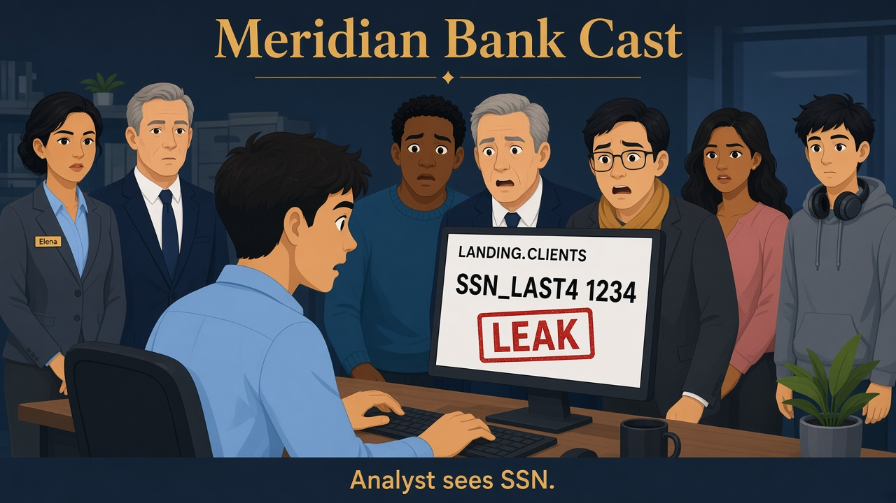
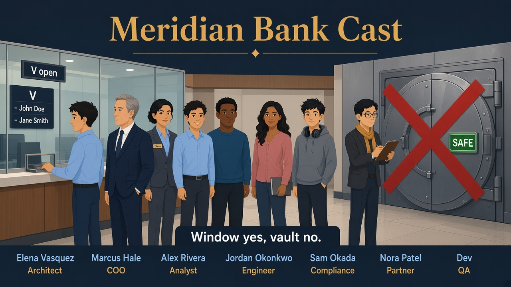
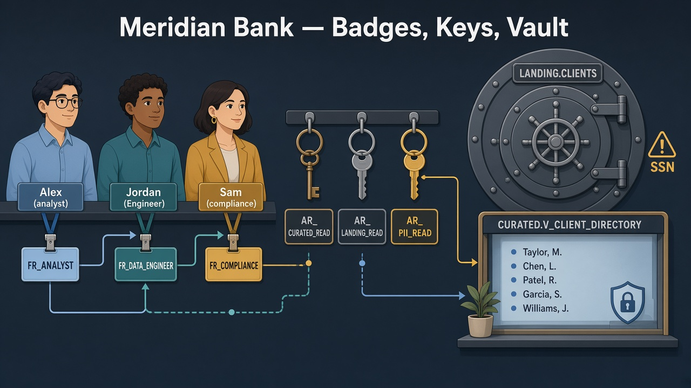
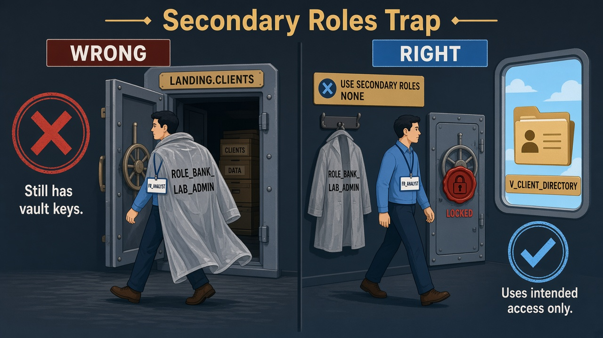

Read every Teach first box before you run SQL.
Lab 00 must exist (MERIDIAN_BANK + BRONZE_LANDING.CLIENTS).
Today you learn the grant chain humans actually wear in interviews: FR_ job badges, AR_ key-rings, vault vs window.
Business problem
Alex (Analyst) needs client names for a board deck.
Jordan (Engineer) needs the BRONZE_LANDING vault for pipelines.
Sam (Compliance) needs SSN last-4 for an audit.
Marcus: “If Alex ever selects SSN, Meridian fails the exam with the regulator.”
Solution you will build
Job badges FR_* + key-rings AR_* + safe view SILVER_CURATED.V_CLIENT_DIRECTORY
(no email/phone/SSN). Prove Alex is blocked from BRONZE_LANDING.CLIENTS with USE SECONDARY ROLES NONE.

Before
Alex sees SSN — vault and window look the same.

After
Window yes — names only. Vault locked for Alex.
See it — don’t memorize definitions
Humans wear job badges. Badges inherit key-rings. Alex never gets the vault key.
Alex: AR_SILVER_CURATED_READ only Jordan: AR_BRONZE_LANDING_READ
Proof gotcha
Secondary roles
UI can say FR_ANALYST while lab admin still opens the vault.
USE ROLE FR_ANALYST; USE SECONDARY ROLES NONE;
Window
View = saved SELECT
Not a second copy of clients — a safe projection.
V_CLIENT_DIRECTORY names · no SSN

Picture 1 · Burn this in
Humans wear only job badges (FR_). Badges clip onto key-rings (AR_).
Alex’s ring opens the glass window — never the SSN vault.
The grant chain — build keys before you clip badges
1 · CreateAR_ + FR_ rolesempty badges & key-rings
2 · Grant objectsUSAGE + SELECTonto AR_ only
3 · InheritGRANT ROLE AR → FRhumans get FR_ only
Elena never gives Alex AR_BRONZE_LANDING_READ directly. Alex wears FR_ANALYST, which inherits
AR_SILVER_CURATED_READ only — so the vault table stays locked while the window view opens.
Vault vs window — two different doors
Vault
BRONZE_LANDING.CLIENTS
Bronze dock — PII columns live here.
Jordan · Sam ✓ Alex ✗
Window
SILVER_CURATED.V_CLIENT_DIRECTORY
Safe projection for board decks.
Alex SELECT → names only SSN column not in view
Picture 2 · The clip rule
Elena hangs doors on AR_, clips AR_ onto FR_, gives humans only FR_.
Alex never holds the vault key-ring.
0
Privilege repair (if CREATE ROLE failed)
When you need this
Only ACCOUNTADMIN can stamp Elena’s role with “may print new badges.” Skip if Lab 00 smoke test already passed.
SQL · repair as mayor
USE ROLE ACCOUNTADMIN;
GRANT CREATE ROLE ON ACCOUNT TO ROLE ROLE_BANK_LAB_ADMIN;
GRANT USAGE ON WAREHOUSE WH_BANK_XS TO ROLE ROLE_BANK_LAB_ADMIN WITH GRANT OPTION;
GRANT OPERATE ON WAREHOUSE WH_BANK_XS TO ROLE ROLE_BANK_LAB_ADMIN WITH GRANT OPTION;
SQL · grant lab admin to you + smoke
SET uname = (SELECT CURRENT_USER());
GRANT ROLE ROLE_BANK_LAB_ADMIN TO USER IDENTIFIER($uname);
USE ROLE ROLE_BANK_LAB_ADMIN;
CREATE ROLE IF NOT EXISTS ROLE_BANK_SMOKE_TMP COMMENT = 'temp';
DROP ROLE IF EXISTS ROLE_BANK_SMOKE_TMP;
SELECT 'Privilege repair OK' AS status;
✓ Status row — switch back to ROLE_BANK_LAB_ADMIN for Step 1
1
Confirm the vault has clients
What this proves
Lab 00 data is present and PII column is populated — RBAC has something real to protect.
SQL · count clients
USE ROLE ROLE_BANK_LAB_ADMIN;
USE WAREHOUSE WH_BANK_XS;
USE DATABASE MERIDIAN_BANK;
SELECT COUNT(*) AS n, COUNT(SSN_LAST4) AS pii_rows FROM BRONZE_LANDING.CLIENTS;
✓ n = 5 and pii_rows = 5
2
Print blank badges (FR_ and AR_)
Why empty roles first?
Three job badges for humans, three key-rings for object grants. No powers until Steps 3–6.
SQL · access roles (key-rings)
CREATE ROLE IF NOT EXISTS AR_BRONZE_LANDING_READ;
CREATE ROLE IF NOT EXISTS AR_SILVER_CURATED_READ;
CREATE ROLE IF NOT EXISTS AR_PII_READ;
SQL · functional roles (job badges)
CREATE ROLE IF NOT EXISTS FR_ANALYST;
CREATE ROLE IF NOT EXISTS FR_DATA_ENGINEER;
CREATE ROLE IF NOT EXISTS FR_COMPLIANCE;
✓ Six roles under Account → Roles
3
Let job badges use the bank engine
Why FR_ need warehouse USAGE?
Proof queries run as Alex/Jordan/Sam — each FR_ must be allowed to start WH_BANK_XS.
SQL · warehouse on FR_
GRANT USAGE ON WAREHOUSE WH_BANK_XS TO ROLE FR_ANALYST;
GRANT USAGE ON WAREHOUSE WH_BANK_XS TO ROLE FR_DATA_ENGINEER;
GRANT USAGE ON WAREHOUSE WH_BANK_XS TO ROLE FR_COMPLIANCE;
✓ Each FR_ can USE WAREHOUSE in proofs
4
Building + floor keys on key-rings
Database = building, schema = floor
USAGE ON DATABASE plus USAGE ON SCHEMA must be granted before any SELECT works.
SQL · database USAGE on AR_
GRANT USAGE ON DATABASE MERIDIAN_BANK TO ROLE AR_BRONZE_LANDING_READ;
GRANT USAGE ON DATABASE MERIDIAN_BANK TO ROLE AR_SILVER_CURATED_READ;
GRANT USAGE ON DATABASE MERIDIAN_BANK TO ROLE AR_PII_READ;
SQL · schema USAGE on AR_
GRANT USAGE ON SCHEMA BRONZE_LANDING TO ROLE AR_BRONZE_LANDING_READ;
GRANT USAGE ON SCHEMA SILVER_CURATED TO ROLE AR_SILVER_CURATED_READ;
GRANT USAGE ON SCHEMA RISK_CTRL TO ROLE AR_PII_READ;
GRANT USAGE ON SCHEMA BRONZE_LANDING TO ROLE AR_PII_READ;
✓ Key-rings can “enter” the right floors
5
Cabinet keys (SELECT) on key-rings
ALL vs FUTURE
ALL TABLES covers what exists today. FUTURE TABLES covers what Jordan creates tomorrow without a grant fire drill.
SQL · BRONZE_LANDING SELECT
GRANT SELECT ON ALL TABLES IN SCHEMA BRONZE_LANDING TO ROLE AR_BRONZE_LANDING_READ;
GRANT SELECT ON FUTURE TABLES IN SCHEMA BRONZE_LANDING TO ROLE AR_BRONZE_LANDING_READ;
SQL · SILVER_CURATED SELECT
GRANT SELECT ON ALL TABLES IN SCHEMA SILVER_CURATED TO ROLE AR_SILVER_CURATED_READ;
GRANT SELECT ON FUTURE TABLES IN SCHEMA SILVER_CURATED TO ROLE AR_SILVER_CURATED_READ;
SQL · PII BRONZE_LANDING SELECT
GRANT SELECT ON ALL TABLES IN SCHEMA BRONZE_LANDING TO ROLE AR_PII_READ;
GRANT SELECT ON FUTURE TABLES IN SCHEMA BRONZE_LANDING TO ROLE AR_PII_READ;
✓ AR_BRONZE_LANDING_READ and AR_PII_READ can read BRONZE_LANDING tables; AR_SILVER_CURATED_READ reads SILVER_CURATED
6
Clip key-rings onto job badges
Who gets which ring?
Alex → AR_SILVER_CURATED_READ only (window, not vault)
Jordan → BRONZE_LANDING + SILVER_CURATED (pipelines + clean shelves)
Sam → PII + SILVER_CURATED (audit + governed shelf)
SQL · Alex
GRANT ROLE AR_SILVER_CURATED_READ TO ROLE FR_ANALYST;
SQL · Jordan
GRANT ROLE AR_BRONZE_LANDING_READ TO ROLE FR_DATA_ENGINEER;
GRANT ROLE AR_SILVER_CURATED_READ TO ROLE FR_DATA_ENGINEER;
SQL · Sam
GRANT ROLE AR_PII_READ TO ROLE FR_COMPLIANCE;
GRANT ROLE AR_SILVER_CURATED_READ TO ROLE FR_COMPLIANCE;
✓ Inheritance visible under each FR_ role in Admin
7
Let your user wear all three jobs (for testing)
Why grant FR_ to your login?
You play Alex, Jordan, and Sam in one Snowflake user — realistic for a lab, not production (one human = one FR_ there).
SQL · grant FR_ to you
SET uname = (SELECT CURRENT_USER());
GRANT ROLE FR_ANALYST TO USER IDENTIFIER($uname);
GRANT ROLE FR_DATA_ENGINEER TO USER IDENTIFIER($uname);
GRANT ROLE FR_COMPLIANCE TO USER IDENTIFIER($uname);
✓ Role dropdown lists all three FR_ roles
8
Build the safe client directory window
Why a view?
One governed projection — Alex gets IDs, names, countries, dates. Email, phone, and SSN never appear in the SELECT list.
SQL · create view
USE SCHEMA SILVER_CURATED;
CREATE OR REPLACE VIEW V_CLIENT_DIRECTORY AS
SELECT CLIENT_ID, FULL_NAME, COUNTRY, CREATED_AT
FROM BRONZE_LANDING.CLIENTS;
SQL · grant view to key-ring
GRANT SELECT ON VIEW V_CLIENT_DIRECTORY TO ROLE AR_SILVER_CURATED_READ;
SELECT 'Lab 01 Meridian Bank RBAC ready' AS status;
✓ Status row — view visible under SILVER_CURATED in Snowsight
9
Proof: wear Alex — window yes, vault no

Picture 3 · Why your vault query “worked”
UI can say FR_ANALYST while a second coat (lab-admin) is still on.
USE SECONDARY ROLES NONE hangs that coat — then the vault stays shut.
Snowsight gotcha — secondary roles
Your user also has ROLE_BANK_LAB_ADMIN (and maybe ACCOUNTADMIN).
Snowsight often keeps those as secondary roles, so the UI says FR_ANALYST
but you still have vault access. Run setup as lab admin; run proof statements in a fresh block — not “Run All” past the role switch.
Always run USE SECONDARY ROLES NONE; before Alex/Sam proofs.
Role: FR_ANALYST ▾
WH: WH_BANK_XS ▾
DB: MERIDIAN_BANK ▾
What you’re proving
Primary role is analyst-only; secondary roles empty; window SELECT works; vault SELECT fails.
SQL · become Alex (primary only)
USE ROLE FR_ANALYST;
USE SECONDARY ROLES NONE;
USE WAREHOUSE WH_BANK_XS;
USE DATABASE MERIDIAN_BANK;
SELECT CURRENT_ROLE(), CURRENT_SECONDARY_ROLES();
✓ FR_ANALYST primary · secondary shows NONE or empty
SQL · window OK
SELECT * FROM SILVER_CURATED.V_CLIENT_DIRECTORY;
✓ Names and countries only — no EMAIL or SSN_LAST4 columns
SQL · vault blocked (celebrate the error)
SELECT * FROM BRONZE_LANDING.CLIENTS;
✗ Insufficient privileges — regulator would smile
10
Proof: Jordan and Sam paths
Same rule every time
USE ROLE then USE SECONDARY ROLES NONE before each proof — policies and table access both respect the primary badge.
SQL · Jordan reads BRONZE_LANDING email
USE ROLE FR_DATA_ENGINEER;
USE SECONDARY ROLES NONE;
SELECT CLIENT_ID, EMAIL FROM BRONZE_LANDING.CLIENTS LIMIT 5;
✓ Five rows with EMAIL — engineer has BRONZE_LANDING key-ring
SQL · Sam reads SSN last-4
USE ROLE FR_COMPLIANCE;
USE SECONDARY ROLES NONE;
SELECT CLIENT_ID, SSN_LAST4 FROM BRONZE_LANDING.CLIENTS;
✓ SSN_LAST4 visible for all five clients
When you go back to building objects: USE ROLE ROLE_BANK_LAB_ADMIN;
11
Smoke test (don’t skip)
What “smoke” means
Copy sql/smoke_role_proofs.sql and run one statement at a time.
The analyst → BRONZE_LANDING.CLIENTS step must error. If it returns rows, secondary roles are still on.
✓ Smoke green → continue to Lab 02
Elena’s wrap-up (say this out loud)
“Meridian’s problem was open access to client PII. I separated functional roles (jobs) from access roles (key-rings):
FR_ANALYST, FR_DATA_ENGINEER, FR_COMPLIANCE and AR_SILVER_CURATED_READ, AR_BRONZE_LANDING_READ, AR_PII_READ.
I hung USAGE and SELECT on the key-rings, clipped the right rings onto each job badge, and built V_CLIENT_DIRECTORY so analysts never need the vault table.
I proved it with USE SECONDARY ROLES NONE: as FR_ANALYST, BRONZE_LANDING SELECT fails.
Outcome: Alex can ship the board deck; Sam can audit; the regulator’s nightmare path is closed.”